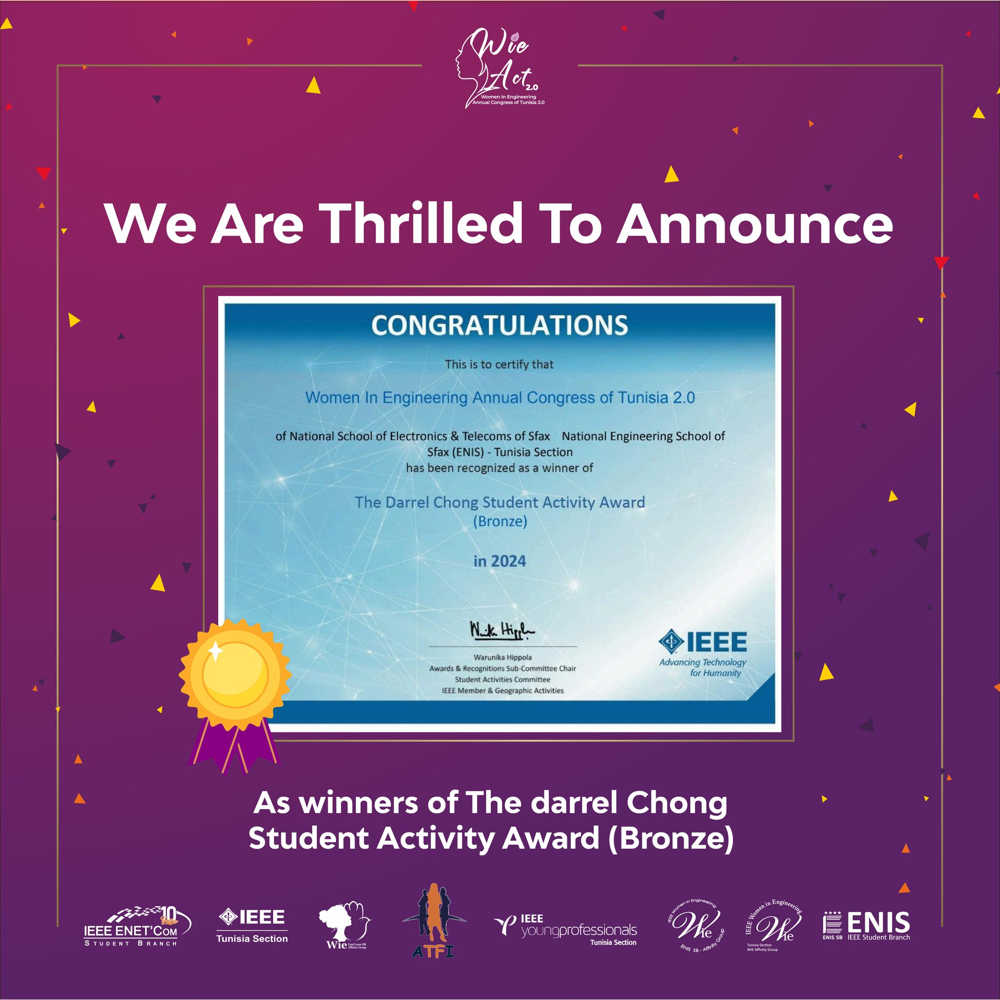
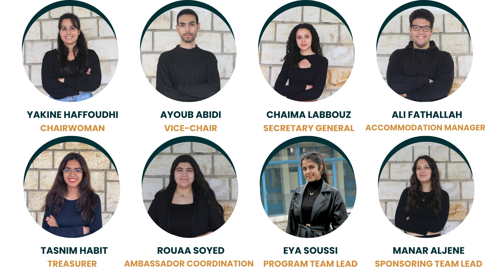

-
WIE ACT 4.0
Women In Engineering Annual Congress Of Tunisia
The Women in Engineering Annual Congress of Tunisia (WIE ACT) is an inspiring event that brings together creative minds from engineering, technology, and development. Our objective is to support women in engineering through providing an environment for information sharing, networking, and professional development.
.png)
-
WIE ACT 4.0
WIE ACT 4.0 is an exciting event organized by IEEE WIE ENIT SB that focuses on supporting and empowering women in agriculture. The event will bring together over 300 participants to discuss how women are making a difference in farming and food production, especially with the challenges of climate change and limited resources. Through workshops, talks, and hands-on activities, the event will showcase innovative ideas and solutions in agriculture. It will also inspire and encourage women to take leadership roles in the industry and help shape the future of sustainable farming.
WHEN11-12 OctoberWHERE5 Stars HotelParticipants0+PREVIOUS VERSIONS
.png)
WIE ACT 1.0
The inaugural IEEE WIE Congress in Tunisia celebrated the exceptional achievements of STEM professionals and sparked women's empowerment, enabling them to thrive in their industries. With the slogan 'Honoring the Past and Inspiring the Future', WIE ACT 1.0 featured inspiring speakers, entertaining competitions, and delightful surprises, providing a remarkable experience.
.png)
WIE ACT 2.0
The second edition of the Annual Women In Engineering Congress of Tunisia (WIE ACT 2.0) built on its predecessor's success, hosted by IEEE WIE ENETCOM SAG & IEEE WIE ENIS SAG, in partnership with the IEEE WIE Tunisia section. WIE ACT 2.0 celebrated innovation, collaboration, and excellence with engaging workshops, stimulating sessions, thrilling competitions, and vibrant celebrations. Its success inspires us as we plan the next edition with enthusiasm and determination.
.png)
WIE ACT 3.0
WIE ACT 3.0, hosted by the IEEE WIE ESPRIT Student Branch Affinity Group, was a leading event for empowering women in engineering. That year's congress aimed to encourage creativity, diversity, and quality in the engineering community. Participants benefited from inspiring speakers, hands-on workshops, and valuable networking opportunities as they fought to revolutionize women's privacy in the digital age.
AWARDS
We are proud to share that WIE ACT 2.0 has been awarded the esteemed Darel Chong Student Activity Bronze Award. This international recognition highlights the creativity, collaboration, and impact of our initiative in promoting women's leadership in engineering. The award reflects the hard work and dedication of our team, and it motivates us to continue making a difference through inclusive and inspiring activities.
-
IEEE ENIT SB
Founded on May 24, 2005, the IEEE ENIT Student Branch is a vibrant and multidisciplinary c ommunity at the National Engineering School of Tunis (ENIT). It aims to promote IEEE’s mission in Tunisia by empowering students to stay at the forefront of technological innovation and professional development. IEEE ENIT SB is composed of several technical chapters (RAS,CS,IAS,PES) and affinity groups (WIE,SIGHT), each contributing to the branch's richness and diversity.
IEEE WIE ENIT AG
The IEEE Women in Engineering (WIE) ENIT Affinity Group is a vibrant community that empowers and supports women in engineering and technology. Through a wide range of activities—from technical workshops and outreach programs to leadership events and innovative challenges—the branch aims to inspire young minds, promote gender diversity, and foster a culture of inclusion. By connecting students with professionals, encouraging collaboration, and nurturing talent, IEEE WIE ENIT continues to make a meaningful impact both on campus and in the broader community.
GET TO KNOW THE DEDICATED TEAM
.png)
-